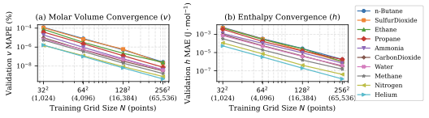
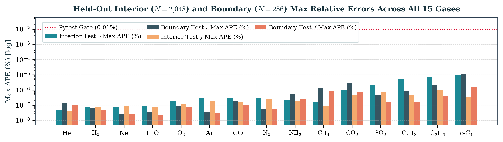

Real gas lab (realgas-ml v0.3.0)
Predict supercritical Pressure–Volume–Temperature (PVT) properties, molar enthalpy (h), molar entropy (s), and fugacity (f) for 15 pure gases using our local Radial Basis Function (RBF) Machine Learning (ML) model and the Peng–Robinson (1976) Equation of State (EOS).
Interior Test Split (N = 2,048) and Boundary Test Split (N = 256) accuracy metrics for the selected gas from realgas_ml/data/CarbonDioxide_metrics.json (verified by tests/test_properties.py):
| Test Split | v Mean Abs. % Error (MAPE, %) | v Max Abs. % Error (Max APE, %) | f Mean Abs. % Error (MAPE, %) | f Max Abs. % Error (Max APE, %) | h Mean Abs. Error (MAE, J/mol) | h Max Abs. Error (Max AE, J/mol) | s Mean Abs. Error (MAE, J/mol·K) | s Max Abs. Error (Max AE, J/mol·K) |
|---|


Thermodynamic Equations, Full Forms & Model Overview
Compressibility Factor (Z) measures how much a real gas deviates from ideal-gas Pressure–Volume–Temperature (PVT) behavior (Z = Pv / RT, where Z = 1 for an ideal gas). Our solver in realgas_ml/peng_robinson.py solves the cubic Peng–Robinson (1976) Equation of State (PR76 EOS) polynomial at 65,536 states per gas.
Fugacity (f) is f = φP, where the fugacity coefficient φ measures how much the chemical potential deviates from an ideal gas (Maginn, CBE 20260). Fugacity has pressure units and is an intensive property (it does not change when the number of moles n changes).
Molar Enthalpy (h) and Molar Entropy (s) are intensive molar properties; Total Enthalpy (H = nh) and Total Entropy (S = ns) are extensive properties for n moles. Ideal-gas changes are integrated analytically from National Aeronautics and Space Administration (NASA) 7-coefficient heat-capacity polynomials starting from hig = sig = 0 at 300 K and 1 bar, with Peng–Robinson Equation of State (EOS) real-gas departures added at the actual (T, P) state.
Local Radial Basis Function (RBF) Machine Learning (ML) Model: In realgas_ml/regressor.py and realgas_ml/model.py, each gas is fitted over normalized (T, ln P) ∈ [0, 1]² using 48-neighbor local quintic Radial Basis Function (RBF) interpolation (φ(r) = −r5) with a quadratic polynomial trend to predict [ln Z, h, s, ln φ]. Accuracy is evaluated via Mean Absolute Percentage Error (MAPE), Maximum Absolute Percentage Error (Max APE), Mean Absolute Error (MAE), and Maximum Absolute Error (Max AE).
📄 Open 4-Page Project Report (PDF) 📝 View LaTeX Source (.tex) 💻 GitHub Repository
Repository Code & Data Links
- Core Python Package:
realgas_ml/peng_robinson.py·realgas_ml/regressor.py·realgas_ml/model.py·realgas_ml/cli.py - Training, Export & Web App Scripts:
train.py·app.py·export_data.py·example.py·pyproject.toml·README.md - Fluid Datasets & Automated Tests:
realgas_ml/data/metadata.json·realgas_ml/data/*_metrics.json·tests/test_properties.py·tests/test_app.py
Literature & Property Data References
- Peng, D.-Y., & Robinson, D. B. (1976). A New Two-Constant Equation of State. Industrial & Engineering Chemistry Fundamentals, 15(1), 59–64. https://doi.org/10.1021/i160057a011
- McBride, B. J., Gordon, S., & Reno, M. A. (1993). National Aeronautics and Space Administration (NASA) Technical Memorandum 4513. https://ntrs.nasa.gov/citations/19940013151
- Cantera 3.2.0 Thermodynamic Database: Species Thermo Reference,
nasa_gas.yaml,critical-properties.yaml, andTHIRD_PARTY_NOTICES.txt. - Lemmon, E. W., et al. (2022). National Institute of Standards and Technology (NIST) Chemistry WebBook, Standard Reference Database (SRD) Number 69. https://doi.org/10.18434/T4D303
- CoolProp Fluid Reference Tables: Helium, Neon, Argon, Ammonia, SulfurDioxide, and Water.
- Maginn, E. J. CBE 20260 Lecture Notes: Fugacity from Equations of State. CBE20260 Fugacity-EOS Notes